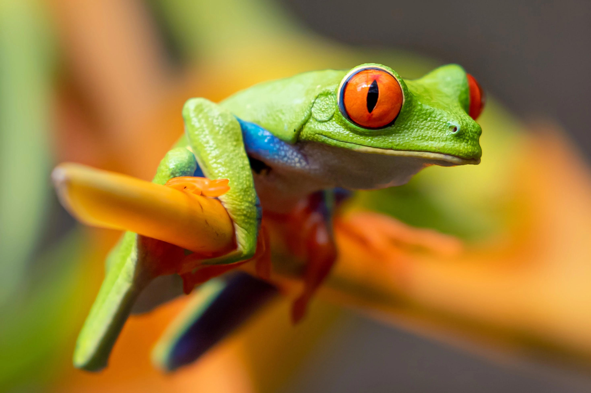
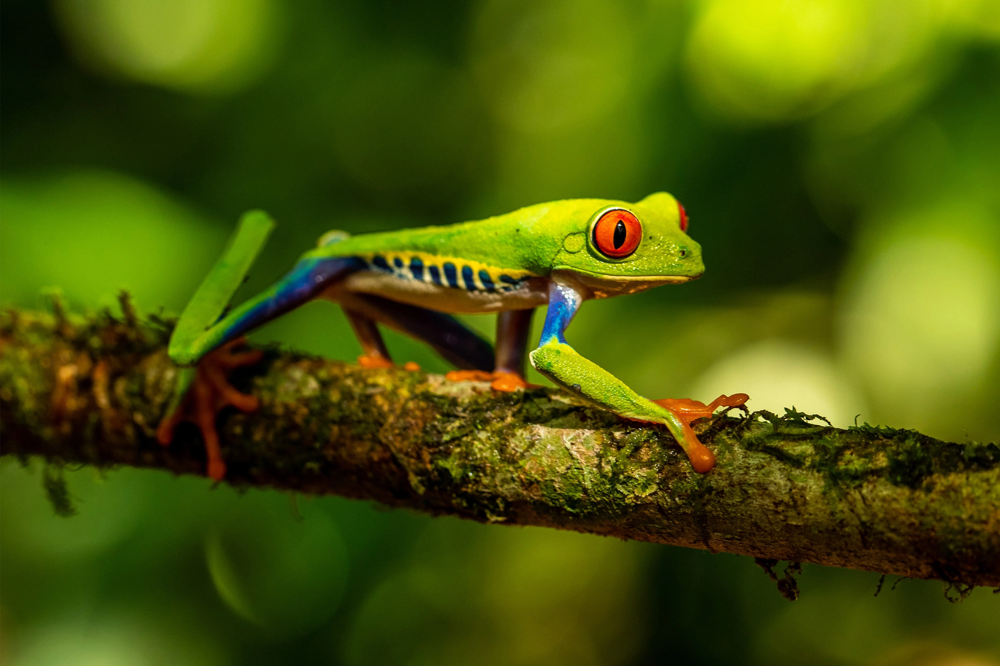
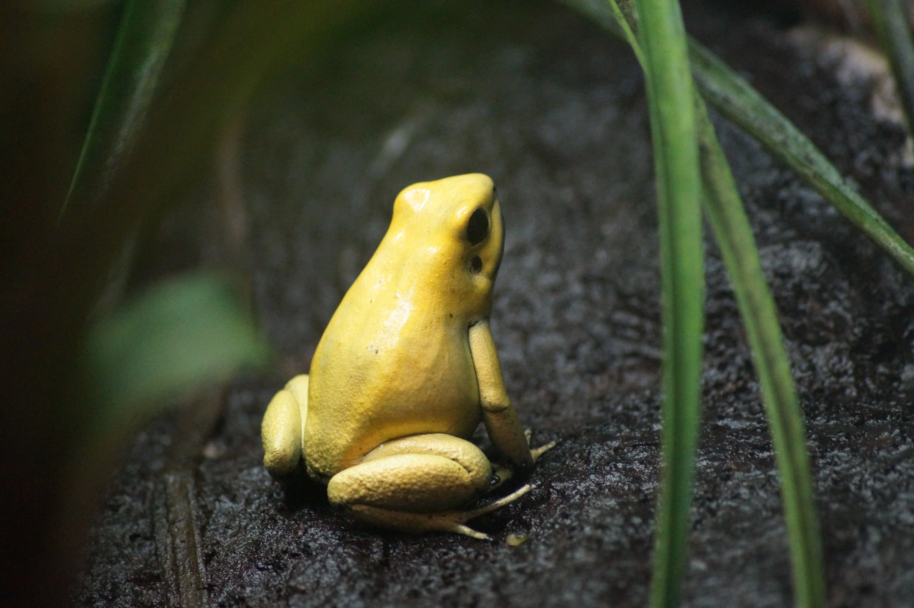
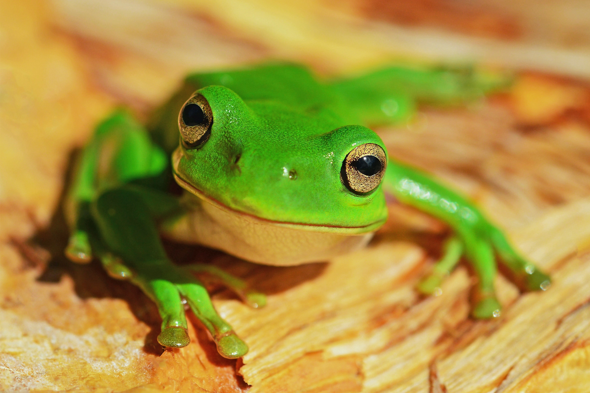
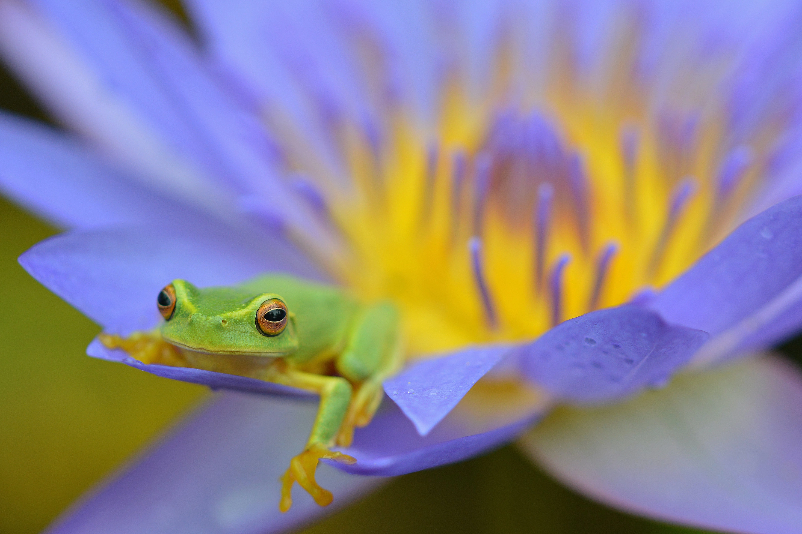
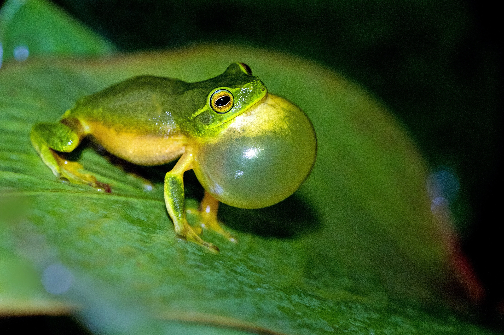
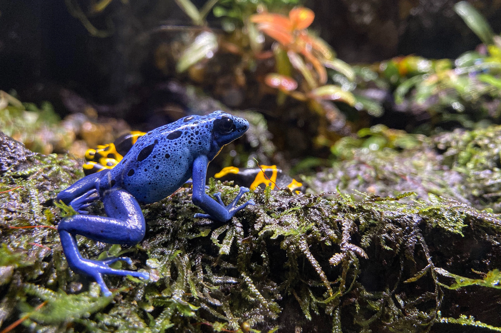

1 / 7

Photo by Stephanie LeBlanc on Unsplash
2 / 7

Photo by Zdeněk Macháček on Unsplash
3 / 7

Photo by Ruben Engel on Unsplash
4 / 7

Photo by David Clode on Unsplash
5 / 7

Photo by David Clode on Unsplash
6 / 7

Photo by David Clode on Unsplash
7 / 7

Photo by cindy woon on Unsplash
❮
❯